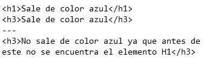

CSS3
Estilos internos y Externos,Selectores CSS
Objetivo General
La finalidad de este sitio web, es el de poder identificar los elementos internos, externos y selectores utilizados en el lenguaje de programación CSS3, esto con el fin de que el lector adquiera un mayor conocimiento sobre la manera de poder utilizar este lenguaje de programación
Objetivos Especificos
- Entender los Estilos Internos en CSS3
- Comprender los Estilos Externos en CSS3
- Como aplicar los diferentes Selectores en CSS3
Estilos Internos en CSS3
Los estilos Internos hacen referencia a la manera en que se pueden incluir una serie de caracteristicas a nivel interno sobre cada etiqueta esto debe ser sobre la misma página, pero las mismas deben tener la etiqueta < style > dentro de la propia página de html, por ejemplo:
Donde al momento de utilizar esta etiqueta H1, la misma me mostrara el texto de color azul y cuya alineación del texto sera centrada, como se definio en la etiqueta < style >
Estilos Externos en CSS3
Es la mas recomendada ya que separa el lenguaje CSS3 del lenguaje HTML, se realiza creando un nuevo documento el cual en vez de tener extensión .HTML, tendra una extensión .CSS y en este se copiaran los valores que se requieren configurar, por ejemplo:
Luego de crear la nueva página con extensión .css, se procede a realizar la asociación de la misma en cada una de las páginas html, para que estas traigan la información y configuraciones ya definidas de la página con extensión .css, por ejemplo
Selectores en CSS3
Un selector es el instrumento que proporciona CSS para determinar qué partes de la página web se van a ver afectados por el código CSS que indiquemos, donde estos se denominan en su mayoria sobre los siguientes grupos:
Selectores Simples:
Podemos aplicar un estilo a los elementos de un tipo de etiqueta concreta de HTML. Ejemplo:
En principio, con ese código todos los elementos de tipo p de la página saldrán de color rojo.
Podemos incluso aplicar el estilo a varias etiquetas a la vez
Los títulos de tipo h1, h2 o h3 saldrán de color azul.
Selectores Universales:
Su función consiste en aplicar el estilo a todos los elementos de una aágina o documento, por ejemplo:
Permite colorear en rojo el texto que esté dentro de una tabla; no importará que etiqueta sea la que está dentro de la tabla.
Selector de Hijos:
Aplica su descendencia a un hijo directo, su función es la de tomar la misma configuración que tenga la etiqueta principal, donde dicha asociación se realiza bajo el simbolo >, por ejemplo:
En el texto HTMl del ejemplo anterior solo se colorearía el primer párrafo:
Selector Adyacente:
Se representa bajo el simbolo +, su finalidad es referenciar elementos que son hermanos, la referencia apuntara al elemento de la derecha cuando es inmediatamente predecido por el de la izquierda, el estilo que se dara al elemento H1 + H3, se dara al primero elemento H3 pero no aplicara en dado caso que el elemento H3 no se encuentra justamente después del H1, por ejemplo:

Referencias: